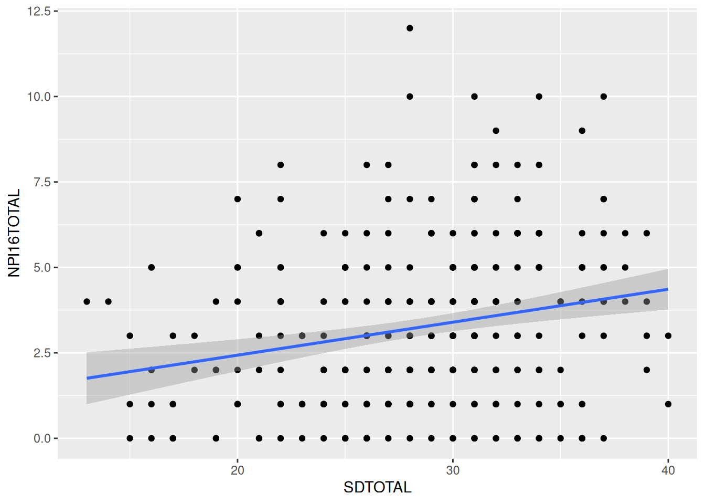
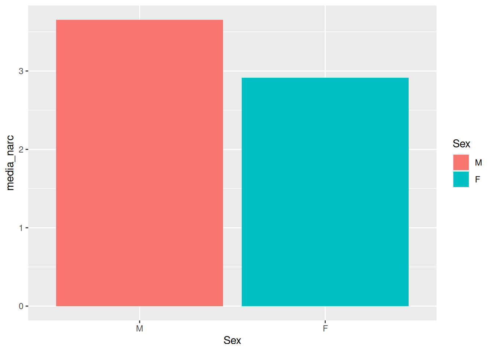
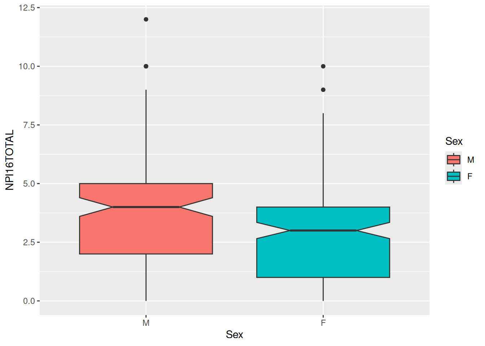

library(tidyverse)
load("input/datosLimpios.RData")Ejercicio 8
Modelos lineales
En la sesión 8 vimos modelos lineales generales, para variables numéricas y para variables categóricas, y la interpretación de la salida de ajustes a varios modelos lineales generales.
Ahora vamos a ver el detalle del ajuste e interpretación de modelos.
1. Dos variables numéricas
Visualización
Veamos los datos primero gráficamente con ggplot2:
- Cargar los datos “DatosLimpios.RData”
- Hacer un gráfico de puntos de narcisismo (y) vs dominancia social (x) usando
ggplot. - Agregar una recta de ajuste de regresión lineal sumando una capa al gráfico con esta línea de código:
stat_smooth(method = "lm")
Ajuste de un modelo lineal
- Ajustar un modelo lineal general para narcisismo (y) vs. dominancia social (x) usando la función
lm, asignarlo a una variable con el nombre de “npi.lm” y mirar la salida con la funciónsummary
Interpretación
Calcular el valor estimado de narcisismo para un valor de dominancia social de 30. Tip: usando la función
coefpuedo obtener los coeficientes del modelo sin tener que copiarlos a mano.Calcular el coeficiente de correlación de Pearson para las dos variables del modelo ajustado y testear la significancia de la correlación con la función
cor.test(atentos al argumento use, buscar en la ayuda). Comparar los estadísticos t y r obtenidos con los obtenidos en el modelo anterior.
2. Una variable numérica y una categórica
Vamos a trabajar con el mismo dataframe, pero ahora vamos a evaluar diferencias en el puntaje de narcisismo entre hombres y mujeres.
Visualización
- Hacer un gráfico de barras para el promedio de narcisismo (y) para hombres y mujeres (x), que cada color corresponda a un sexo (Tip: recordar el ejercicio 7, uso summarise antes para calcular las medias).
Ya que estamos, probar este código para ver los datos en diagrama de cajas en lugar de barras: datosLimpios %>% ggplot(aes(x=Sex, y=NPI16TOTAL, fill=Sex)) + geom_boxplot(notch = T). La cintura muestra la mediana, los límites de las cajas el rango intercuartil, los bigotes el máximo y el mínimo, los puntos muestran los outliers y la cuña (notch) muestra el intervalo de confianza al 95%. Mirando esto, y comparando ambas cajas, soy capaz de saber si hay una diferencia significativa entre los sexos. Pero ajustemos un modelo para testearlo.
Ajuste de un modelo lineal
- Ajustar un modelo lineal general para narcisismo (y) vs. sexo (x).
Interpretación
¿Hay una diferencia significativa entre los sexos?
Dijimos que cuando tenemos variables categóricas como predictores, entonces el parámetro de intercepto (b) corresponde a la media del nivel de base. ¿Cuál es el nivel de base? ¿Por qué? ¿Coincide con la media? Corroborarlo.
¿Y cómo se interpreta la pendiente?
TipSoluciones
Desplegá esta sección cuando quieras comparar con un conjunto de soluciones posibles.
Cargar los datos “DatosLimpios.RData”
Hacer un gráfico de puntos de narcisismo (y) vs dominancia social (x) usando
ggplot.Agregar una recta de ajuste de regresión lineal sumando una capa al gráfico con esta línea de código:
stat_smooth(method = "lm")
datosLimpios %>%
ggplot(aes(x = SDTOTAL, y = NPI16TOTAL)) +
geom_point() +
stat_smooth(method = "lm")
La versión gráfica nos da una idea del modelo que estamos tratando de ajustar. Si miramos el código vemos que usa el método ‘lm’, vemos que tiene pendiente positiva, vemos que la recta parece ser el ajuste apropiado (versus una exponencial por ejemplo) pero no nos devuelve los parámetros. Hagamos ahora el ajuste.
Ajuste de un modelo lineal
- Ajustar un modelo lineal general para narcisismo (y) vs. dominancia social (x) usando la función
lm, asignarlo a una variable con el nombre de “npi.lm” y mirar la salida con la funciónsummary.
npi.lm = lm(NPI16TOTAL~SDTOTAL,
data = datosLimpios)
summary(npi.lm)
Call:
lm(formula = NPI16TOTAL ~ SDTOTAL, data = datosLimpios)
Residuals:
Min 1Q Median 3Q Max
-4.0726 -1.7678 -0.2525 1.5063 8.7957
Coefficients:
Estimate Std. Error t value Pr(>|t|)
(Intercept) 0.50280 0.68169 0.738 0.461
SDTOTAL 0.09648 0.02357 4.093 5.43e-05 ***
---
Signif. codes: 0 '***' 0.001 '**' 0.01 '*' 0.05 '.' 0.1 ' ' 1
Residual standard error: 2.291 on 308 degrees of freedom
(20 observations deleted due to missingness)
Multiple R-squared: 0.0516, Adjusted R-squared: 0.04852
F-statistic: 16.76 on 1 and 308 DF, p-value: 5.435e-05Interpretación
Lo primero que vemos en el resumen es la fórmula, para recordarnos qué es lo que estamos tratando de ajustar.
En segundo lugar vemos los residuos (la diferencia entre cada valor real y el valor “predicho” por el modelo, se acuerdan?), recuerden que esperamos que la mediana se acerque a 0, y que tengan poca variabilidad. Lo mejor es explorarlos en mayor detalle con la función genérica plot pero lo vamos a dejar para más adelante.
Lo tercero, y de mayor interés, son los coeficientes. Como vimos, los parámetros aparecen en la columna Estimate: el intercepto (b) en la fila (Intercept) y la pendiente (a) en la fila SDTOTAL. Estos parámetros son los que vimos en la ecuación de la recta: y = ax + b. Ahora que tenemos los parámetros del ajuste, sabiendo un valor de dominancia social podemos predecir el valor esperado de narcisimo cierto?
- Calcular el valor estimado de narcisismo para un valor de dominancia social de 30. Tip: usando la función
coefpuedo obtener los coeficientes del modelo sin tener que copiarlos a mano.
a = coef(npi.lm)[2]
b = coef(npi.lm)[1]
x = 30
narc = a*x + bPor último, vimos que una regresión lineal como esta (con una sola variable predictora) es equivalente a una correlación. Vamos a compararlas:
- Calcular el coeficiente de correlación de Pearson para las dos variables del modelo ajustado y testear la significancia de la correlación con la función
cor.test(atentos al argumento use, buscar en la ayuda). Comparar los estadísticos t y r obtenidos con los obtenidos en el modelo anterior.
cor.test(datosLimpios$NPI16TOTAL,
datosLimpios$SDTOTAL,
use = "pairwise.complete.obs")
Pearson's product-moment correlation
data: datosLimpios$NPI16TOTAL and datosLimpios$SDTOTAL
t = 4.0934, df = 308, p-value = 5.435e-05
alternative hypothesis: true correlation is not equal to 0
95 percent confidence interval:
0.1187567 0.3301903
sample estimates:
cor
0.2271485 2. Una variable numérica y una categórica
Vamos a trabajar con el mismo dataframe, pero ahora vamos a evaluar diferencias en el puntaje de narcisismo entre hombres y mujeres.
Visualización
- Hacer un gráfico de barras para el promedio de narcisismo (y) para hombres y mujeres (x), que cada color corresponda a un sexo (Tip: recordar el ejercicio 7, uso summarise antes para calcular las medias).
medias = datosLimpios %>%
group_by(Sex) %>%
summarise(media_narc = mean(NPI16TOTAL, na.rm = T))
medias %>%
ggplot(aes(x = Sex, y = media_narc, fill = Sex)) +
geom_bar(stat="identity") 
Ya que estamos, probar este código para ver los datos en diagrama de cajas en lugar de barras: datosLimpios %>% ggplot(aes(x=Sex, y=NPI16TOTAL, fill=Sex)) + geom_boxplot(notch = T). La cintura muestra la mediana, los límites de las cajas el rango intercuartil, los bigotes el máximo y el mínimo, los puntos muestran los outliers y la cuña (notch) muestra el intervalo de confianza al 95%. Mirando esto, y comparando ambas cajas, soy capaz de saber si hay una diferencia significativa entre los sexos. Pero ajustemos un modelo para testearlo.

Ajuste de un modelo lineal
- Ajustar un modelo lineal general para narcisismo (y) vs. sexo (x).
npi.lm2 = lm(NPI16TOTAL ~ Sex,
data = datosLimpios)
summary(npi.lm2)
Call:
lm(formula = NPI16TOTAL ~ Sex, data = datosLimpios)
Residuals:
Min 1Q Median 3Q Max
-3.6549 -1.9149 0.0851 1.3451 8.3451
Coefficients:
Estimate Std. Error t value Pr(>|t|)
(Intercept) 3.6549 0.1943 18.809 < 2e-16 ***
SexF -0.7400 0.2575 -2.874 0.00431 **
---
Signif. codes: 0 '***' 0.001 '**' 0.01 '*' 0.05 '.' 0.1 ' ' 1
Residual standard error: 2.316 on 328 degrees of freedom
Multiple R-squared: 0.02457, Adjusted R-squared: 0.0216
F-statistic: 8.263 on 1 and 328 DF, p-value: 0.004311Interpretación
¿Hay una diferencia significativa entre los sexos?
Dijimos que cuando tenemos variables categóricas como predictores, entonces el parámetro de intercepto (b) corresponde a la media del nivel de base. ¿Cuál es el nivel de base? ¿Por qué? ¿Coincide con la media? Corroborarlo.
¿Y cómo se interpreta la pendiente?
# Ya calculé las medias para el gráfico de barras, lo guardé en la variable medias
medias# A tibble: 2 × 2
Sex media_narc
<fct> <dbl>
1 M 3.65
2 F 2.91# la pendiente ("a" o SexF en los coeficientes) corresponde a la diferencia entre medias,
# por lo tanto, la suma de los coeficientes me da la media del segundo nivel.
# Lo compruebo:
media_m = coef(npi.lm2)[1]
a = coef(npi.lm2)[2]
media_f = media_m + a